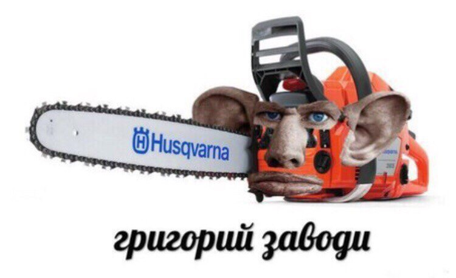

Жмышенко Валерий Альбертович
Бывший вор, рецидивист, как говорится, в отставке.
54 года

Глад Валакас (Пенис Детров, Жмышенко Валерий Альбертович) – стример онлайн-игр, ставший известным благодаря образу 54-летнего деда.
Записывает видео, напрягая голосовые связки и говоря с акцентом.
ПИЛОТ ЖМЫШЕНКО СТАЖ 54 ГОДА ВЫГУЛИВАЕТ ИСТРЕБИТЕЛЯ И ЖМЫХ AIRLANES В САМАРУ
